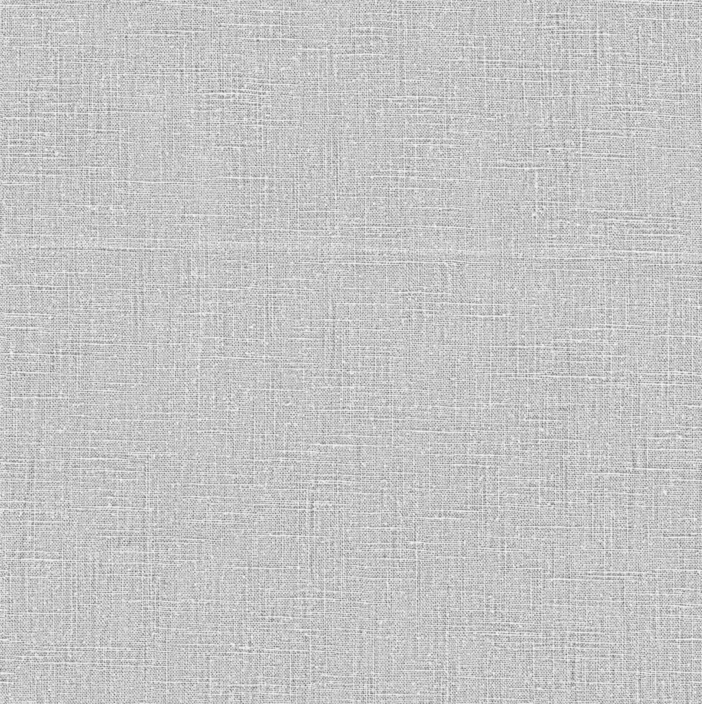
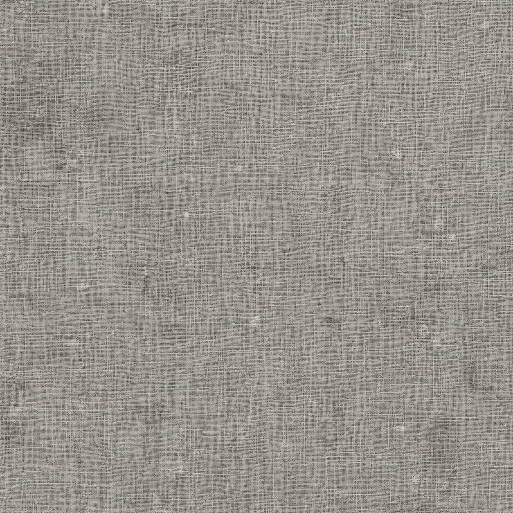
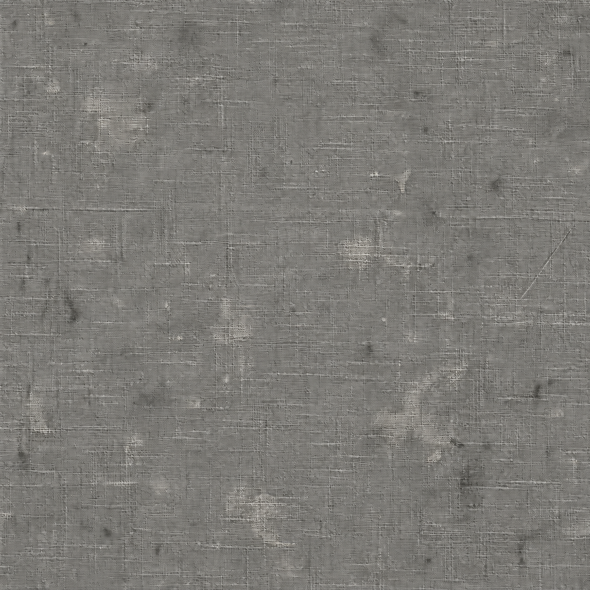

以原照片为底，选择不同表达
共同目标是安静、连续的色面和融合的材质。每张分别选择主体处理、基底/旧痕、边缘气氛：不把所有图都变成毛笔插画，也不默认叠加做旧与晕影。已否定的跨主题场景已从当前项目移除。
早期已认可的 Creative OS 案例
 海岸：含蓄摄影色形、连续色面与薄布面
海岸：含蓄摄影色形、连续色面与薄布面 植物：自然枝叶、利落色形、轻旧痕与柔和收边
植物：自然枝叶、利落色形、轻旧痕与柔和收边素材按表面选择

细布面：实际亚麻贴图，只借经纬
轻旧痕：AI 生成示意，不是实拍旧布
明显磨损：AI 生成示意，不是摄影师原素材贴图比成图对比强、织纹可显得粗；只借结构，成图密度/强度以作品为准。新做旧片只供选择与形态参考，不能代替最终图生图验收。素材来源与用法
技能入口 · 分组依据 · 本轮记录